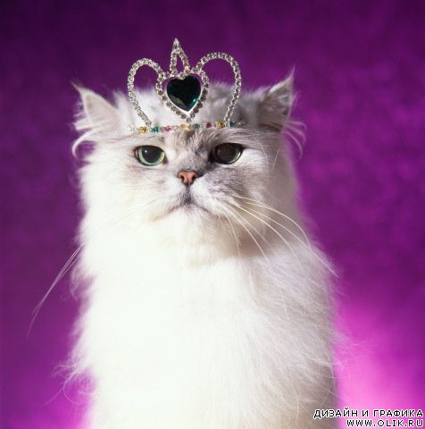
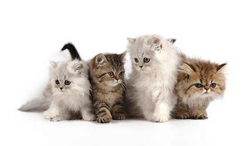
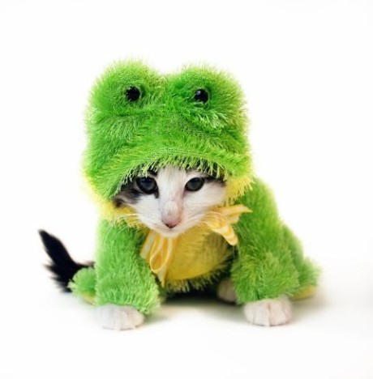
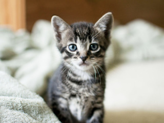

<!DOCTYPE HTML>
<!--(skip)(description)

-->
<!--(version)

-->
<!--(commands)

-->
<html>
<head>
    <title>2.1</title>
    <meta http-equiv="Content-Type" content="text/html; charset=utf-8"/>

    <meta name="viewport"
          content="width=device-width, initial-scale=1.0, minimum-scale=1.0, maximum-scale=1.0, user-scalable=no"/>
    <script src="../../helper.js"></script>
    <script type=text/javascript>

        Api('init');

        function init(ymaps) {
            //ymaps = ym;

            var map = myMap = new ymaps.Map('map', {
                center: [54, 36],
                zoom: 7,
                behaviors: ['default', 'scrollZoom']
            });

            var image = '';
            var imageSmall = '';
            var imageMedium = '';
            var imageLarge = '';
            var imageOneMore = '';
            var contentLayout1 = ymaps.templateLayoutFactory.createClass(
                            '<h3 class=balloon_header>{{ properties.balloonContentHeader|raw }}</h2>' +
                            '<div class=balloon_body>{{ properties.balloonContentBody|raw }}</div>'
            );

            var balloon,
                    pos = map.getCenter(),
                    contentLayout = ymaps.templateLayoutFactory.createClass('$[balloonContent]'),
                    data = { a: 'b' },
                    options = { contentLayout: contentLayout, preventPanelMode: true };

            window.balloon = balloon = new ymaps.Balloon(map);
            balloon.options.set(options).setParent(map.options);

            var placemark1 = new ymaps.Placemark([54, 36], {balloonContent: image});
            var placemark2 = new ymaps.Placemark([55, 37], {balloonContent: imageSmall, iconContent: '=^_^='}, {preset: 'islands#redStretchyIcon'});
            var placemark3 = new ymaps.Placemark([54, 37], {balloonContent: imageMedium, clusterCaption: 'cute 1'});
            var placemark4 = new ymaps.Placemark([54, 37], {balloonContent: imageLarge, clusterCaption: 'cute 2'});
            var placemark5 = new ymaps.Placemark([55, 36], {balloonContent: imageOneMore});
            var placemark6 = new ymaps.Placemark([54.5, 36.5], {balloonContentHeader: 'cute1', clusterCaption: 'cute 1', balloonContentBody: image});
            var placemark7 = new ymaps.Placemark([54.5, 36.5], {balloonContentHeader: 'cute2', clusterCaption: 'cute 2', balloonContentBody: imageOneMore});

            var clusterer1 = new ymaps.Clusterer({
                disableClickZoom: true,
                clusterBalloonContentLayoutHeight: 400,
                clusterBalloonContentLayoutWidth: 400,
                clusterBalloonLeftColumnWidth: 80
            });
            var clusterer2 = new ymaps.Clusterer({
                disableClickZoom: true,
                clusterBalloonContentLayoutHeight: 300,
                clusterBalloonContentLayoutWidth: 300,
                clusterBalloonLeftColumnWidth: 80,
                clusterBalloonItemContentLayout: contentLayout1
            });
            clusterer1.add(placemark1).add(placemark2).add(placemark3).add(placemark4).add(placemark5);
            clusterer2.add(placemark6).add(placemark7);

            var balloonButton = new ymaps.control.Button('balloon');
            balloonButton.events
                    .add('select', function () {
                        balloon.open(pos)
                    })
                    .add('deselect', function () {
                        balloon.close()
                    });
            map.geoObjects.add(clusterer1).add(clusterer2);
            map.controls.add(balloonButton)

        }
    </script>
    <style>
        html, body, #map {
            width: 100%;
            height: 100%;
            margin: 0;
            padding: 0;
        }
    </style>
</head>
<body>
<div id="map"></div>
</body>
</html>